This chapter introduces Android† application development on Intel hardware platforms. Developing Android system applications requires some special development, debugging, and performance analysis tools, and the development environment and object formats are different from those of general-purpose desktop computers. Before developing Android applications, we need to learn about the development process of Android system applications.
Android provides a whole set of tool chains (toolsets) for application development. Early versions of the Android OS supported ARM hardware platforms and started supporting Intel® Atom™ hardware platforms from Android 2.3 (Gingerbread). To support application development on Intel Atom architecture, Intel has added important plug-ins, libraries, and other auxiliary modules to work in conjunction with Android tool chains. In addition, to help developers to get the performance advantages of Intel hardware, Intel has made available development tools such as compilers and Intel® Graphic Performance Analyzer.
This chapter describes the general processes and methods for Android application development on Intel Atom platforms. The methods to achieve optimized performance and low energy consumption using special Intel tools will be introduced in subsequent chapters.
Android Application Development
The following sections describe the development environment, development process, debugging, and simulation of Android systems.
Development Environment of Android Applications
As we mentioned earlier, software development for general-purpose computers is always achieved through native compilation or development. In general, embedded systems are not compatible with the local development environment and so software development is usually done with cross-development.
Cross-Development
The typical cross-development configuration is shown in Figure 3-1. The cross-development environment is built on the development, or host, machine. Usually the host machine is a general-purpose computer such as a PC. The corresponding embedded system is called the target machine. Target machines can be any of the numerous kinds of embedded devices such as mobile phones, tablets, and so on. They may also be special evaluation boards or software-based emulators for development provided by embedded system manufacturers. During development, cross-compilation, assembly, and linking tools on the host machine are used to produce binary code that is executable on the target machine; then the executable files are downloaded and run on the target machine. The cross-development method is not only required for compilation but also for debugging.
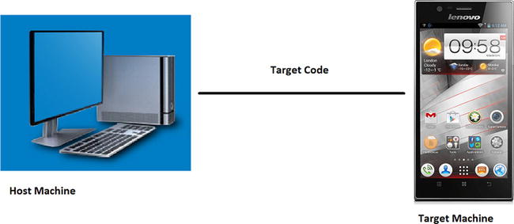
Figure 3-1.
Cross-development configuration of embedded systems
The main reason why cross-development was adopted for embedded systems is that native compilation usually cannot be done effectively on the target machine. First, the hardware of the target machine is often unavailable or unstable during the development process. Second, there is a lack of complete native compilation tools on the target machine platform. Third, the performance of the target machine is insufficient, resulting in slow compilation. Software compilation on embedded systems is more time consuming than on desktop computers because it requires not only compilation of applications but also compilation of library dependencies and OS kernels. For example, compiling a Linux† kernel on an Intel® Pentium® 4 processor-based PC takes more than 10 minutes. The main hardware factors determining the compiling speed include CPU speed, memory capacity, and file system I/O speed. On these factors, embedded systems usually perform worse than PCs. This results in low efficiency of native compilation on target machines. The cross-development method is always adopted for embedded systems, such as cross-compilation (including cross-linking) and cross-debugging.
Because of the differences between the host machine and the target machine in their configurations, functions, system structure, and operating environments, they are usually connected via serial port, parallel port, USB, or Ethernet connection cables. Toolsets, including encoder, compiler, connector, debugging tool, and software configuration management tool, are installed on the host machine.
Generally, the host machine and the target machine are different in the following aspects:
- Different structure: usually, the host machine is an Intel architecture system while the target machine might be Intel or non-Intel architecture system structure such as ARM or MIPS.
- Different processing capacities: usually, the processing speed and storage capacity of the host machine are better than those of the target machine.
- Different operating systems: usually, a general OS runs on the host machine while an Android OS runs on the target machine.
- Different output methods: compared with the host machine, the input and output functions of the target machine are less capable.
For some Android systems, these characteristics may not exist or are insignificant. Take the development of an Intel Atom system for example. The host machine and the target machine use the same system Intel architecture structure. Of course, the instruction sets might be different. For example, the host machine (such as the Intel® Core™ 2 Duo processor) might be compatible with SSE4, while the Intel Atom processor only supports SSE3 .We should consider the instruction set for the target machine during compilation. Considering the limited resources of most Intel Atom systems, we recommend the cross-development method.
Programming Languages
During the past four decades, dozens of programming languages have been developed for general-purpose computer applications. From FORTRAN, C/C++, ADA, and Java† to C#NET. Many factors determine a programming language’s suitability. Each has its own characteristics, and comprehensive comparisons are impossible. Each language’s performance depends on the execution environment. Considering multiple factors and actual development status, the common languages for Android systems include C/C++, Java, and Python†, and occasionally assembly language is used. A combination of languages is needed for programming a sophisticated Android system. The common programming languages are shown in Table 3-1.
Table 3-1.
Commonly Selected Programming Languages
Level | Common Programming Languages |
|---|---|
Application software | C/C++, Java, .NET, script, Python |
OS level | C/C++, Assembly |
Driver program level | C/C++, Assembly |
Boot code, Hardware Abstract Layer (HAL) | Assembly, C/C++ |
Java, launched by Sun Microsystems in May 1995, is a cross-platform object-oriented programming language and includes the Java programming language and Java platforms (JavaSe, JavaEE, JavaME). Java’s style is very similar to that of C and C++. It is a pure object-oriented programming language that has inherited the core contents of the object-oriented C++ and abandoned the pointer (replaced by reference), operator overloading, and multiple inheritance (replaced by interface) in the C++ language, which caused frequent errors. The added Garbage Collector is used for collecting memory occupied by unreferenced objects so the programmer does not need to worry about memory management. In the Java 1.5 version, Sun added other language features such as generic programming, type-safe enum class, variable-length augment, and autoboxing/auto-unboxing.
Java is different from ordinary compilation and execution computer languages in that it is an interpretive computer language. The Java compiler produces binary byte code instead of machine code, which can be executed directly and locally. Compiled Java programs are interpreted into directly executable machine code via Java virtual machine (JVM). The JVM can interpret execution byte code on different platforms to realize the cross-platform feature of “one-time compilation for all executions.” However, it takes some time to interpret byte code, which will to some degree reduce the running efficiency of Java programs. To reduce this burden, Google introduced Android Run Time (ART) in 2014 as a Dalvik version 2, which first became available as a preview feature in KitKat (Android 4.4). Future 64-bit Android will be based on ART. In general, Java is a simple, object-oriented, distributed, interpretive, and stalwart. It is an implantable, high-performance, multi-threaded and dynamic programming language. Considering various advantages of Java, it is the first choice for Android application development.
Having chosen a language, you may not necessarily use all of its functions. Although we have selected Java as the development tool for Android, the development process for Android systems is different from traditional (desktop) Java SDK. The Android SDK uses most of the Java SDK, but has abandoned some portions. For example, for the interface, the java.awt package is only referenced by java.awt.font. If a Java game is migrated to the Android platform, it might need to be ported.
We have mentioned that Java is a cross-platform interpretive computer language. This feature has enabled the high migration capability regardless of platform, but it also has some drawbacks, one of which is that the developer cannot use platform- or architecture-related features or potential. But this can be achieved by machine-related target code by compiling C/C++ and assembly languages. This is more obvious during performance optimization. To use the features of the machine hardware and tap into their performance potential, we usually need to use C/C++ and assembly languages for writing optimized applications. Although such code accounts for a small proportion of all code, the programming complexity is much higher than Java. Therefore, such code is only used in some rare cases. We’ll see that Android application development has adopted a mixed programming mode based mainly on improved Java and supported by C and assembly languages.
We’re going to discuss this programming method in two parts. For developing general functions of Android applications, we are going to use Java. But for performance optimization, we’re going to use a mixed-language programming approach.
The Android Application Development Process
Generally speaking, developing Android software requires the same steps as general-purpose software: designing, encoding, compiling, linking, packaging, deploying, debugging, and optimizing. For some Android systems, testing and verification steps are also required. In terms of process, it can be divided into five stages: encoding, construction, deployment, debugging, and tuning. The typical development process is shown in Figure 3-2.
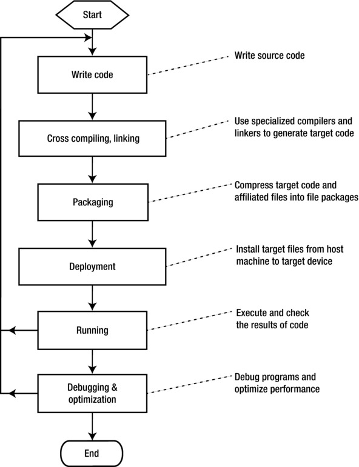
Figure 3-2.
Development process for Android software
Encoding
Encoding is the first step in the software development process. Software source code can be written using various editors. During Android development, this work is mainly editing .java code and .xml source files.
Construction
The task during the construction stage is to convert code into executable programs on Android hardware. This stage includes sub-steps such as compiling, linking, and packaging as shown in Figure 3-3.
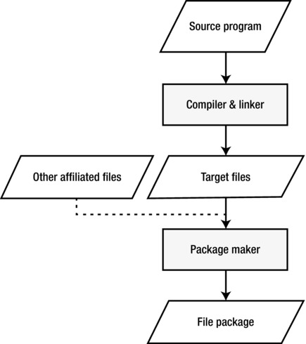
Figure 3-3.
Software construction stage
The first step of construction is the build, which means to translate all source code files into target files. Some target files are machine-related such as C/C++ target files that correspond to the execution instructions of the machine. But some are not specific to the machine, such as Java target source code that is not machine-executable instructions. During Android application development, these files usually have the suffix .class. On Android, .classes are translated to .dex files.
The second step is packaging. The purpose of packaging is to combine and install all target files and affiliated files into one folder on the target machine. As for Android, .dex files and resource files are all packaged into an .apk file that can be stored outside the target machine. The packaging operation is usually done with special packaging tools.
Deployment
Deployment, the last stage of software development, is where the installation package is copied from the host machine, decompressed, and installed into the memory of the Android device.
Android has adopted USB cable-based ISP deployment. As shown in Figure 3-4, the host machine is connected to the target machine via USB cable. The Android OS runs on the target machine while the Windows† or Linux OS runs on the host machine. The file packages generated (.apk) are copied to one directory of the file system in the target machine before being decompressed and installed to finish deployment. The process can be done using command line terminals or the DDMS inside Eclipse.
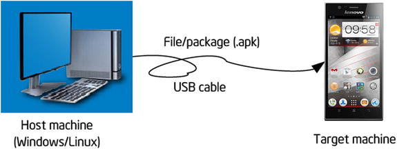
Figure 3-4.
Android application deployment
Under the online programming model, the copying direction of the files between the host machine and the target machine is different. And different terminologies are used for file copying. For example, download/upload is called push/pull in Android. Push means to copy files from the host machine to the target machine, while pull means copy files from the target machine to the host machine.
Debugging and Optimizing Stage
This stage is mainly debugging and optimizing operations on software.
Even the most experienced software engineers cannot totally avoid mistakes in their programs. Mastering debugging techniques is critical for software development. Debugging Android software code is not very efficient because even if you only need to change one line of code, you still need to go through all the build, packaging, and deployment procedures. PC users might be okay with one crash per day. But just imagine the severe consequences if a bug exists in the final Android system product on ATMs, medical operation systems, or satellites.
There are many debugging technologies and techniques for Android software discussed in subsequent sections. Many of the methods are rarely used in general-purpose computer software.
The minimum target for a software product is to ensure its normal running. But this target is not good enough for Android software, which is resource-constrained and has more stringent space and performance requirements than desktop systems. To satisfy these requirements, Android software has to ensure normal running in a performance-optimized way. These goals might be contradictory and developers can hardly realize all of them. So they make compromises usually highlighting the performance requirement.
Improving the performance of an application program is a time-consuming process. It is usually not obvious which functions are consuming most of the execution time. So we need to use specialized tools to analyze the code to accurately understand the performance bottlenecks and advise us on improvements. This process is usually called code profiling, and the tool used is called a profiler or performance analyzer.
The principle of using a profiler for improving performance is to optimize the frequently called portions of the software. For example, if 50 percent of the time is spent on string functions and we optimize such functions by 10 percent, then we can reduce the execution time of the software by about 5 percent. By using a profiler you can accurately measure the various portions of time spent during the execution process to understand which areas can be optimized. Some profilers can bring about improvement suggestions specific to the type of processor. For example, the Intel® Vtune™ Amplifier identifies hotspots in the code that can be further optimized to improve overall performance.
Debugging and Simulation of Android Systems
Debugging Android software has some special challenges, so some methods and devices have been developed to assist developers with the debugging procedure. The most common debugging methods include those described in the following sections.
System Simulator
Early system simulators were realized with instruction set emulators, that is, the technology of simulating a system architecture using software. In other words, software is used to interpret machine codes to simulate a certain processor. Modern system simulators include analog peripherals except CPU simulation. The analog peripherals are used to achieve system simulation results. Some books call the simulator a virtual machine or emulator.
Instruction set emulation includes homogenous emulation and heterogeneous emulation. Homogenous emulation means using software on one processor to emulate a virtualized machine that has the same architecture. At present, the common Microsoft Virtual PC or VMware† emulates the execution of processors based on Intel architecture, making it a type of homogenous emulation. Heterogeneous emulation means emulating the execution of another processor on one processor. Most of the instruction set emulators are types of heterogeneous emulation. For example, Device Emulator emulates the execution of ARM processors on Intel architecture processors. Some common system simulators are shown in Table 3-2.
Table 3-2.
Common System Simulators
Name of Emulator | Simulated Target Platform | Remarks |
|---|---|---|
Microsoft Virtual PC/Virtual Server | Intel® architecture | |
VMware | Intel architecture | Compatible with Windows, Mac†, Linux |
Bochs | Intel architecture | Open source projects |
Device Emulator | ARM | Simulation of SMDK2410 development board |
SkyEye | ARM | Made in China |
VirtualBox Advance | ARM | Simulating Nintendo GBA gamer |
Oracle VM Virtualbox | X86 and AMD64/Intel64 Virtualization | GPL license, and freely available |
When debugging programs on Android systems, the host machine (usually the PC) runs the system simulator and the software of the target machine is run in the system simulator, so no extra hardware is required. The host machine and the target machine are realized on the same machine, which is known as “two uses on one machine.” Now remember the cross-development environment mentioned previously? We said the target machine is not necessarily a real device because it might be a software-based emulator. The emulator replaces the actual target machine during cross-development. Emulators not only save overhead on hardware but make debugging more convenient.
Android development tools bundles Android Virtual Device, a manager that is used to create ARM and x86 emulators. Emulators mimic the hardware and software configuration of a target device. Figure 3-5 shows a screenshot of an AVD running in Windows.
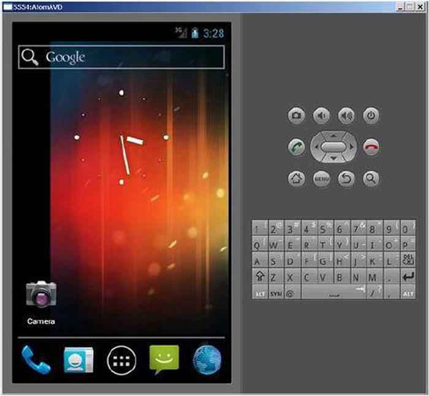
Figure 3-5.
AVD (Android Virtual Device) interface
The Android emulator is also called goldfish. Each AVD simulates a set of mobile devices that run the Android platform, which includes the kernel, system image, and data partitioning as well as the SD card, user data, and the display. Android emulators are based on Qemu, which is a popular open source virtualizer project. The source code for Android emulators is under the external/qemu directory.
AVD simulates the common components of the target machine such as the CPU, screen, keyboard, audio output, camera, and also sensors such as GPS, touch, and gravity acceleration. For example, AVDs with Intel architecture include Intel x86 system images corresponding to each API level. Of course compared to the real device, an AVD has certain shortcomings, which include:
- Inability to place or accept actual calls; but it can simulate phone calls (incoming and outgoing) via control station
- No USB connection
- Inability to capture digital photos or videos
- Inability to capture audio input, but does support output (replay)
- Lack of support for extended earphones
- Inability to determine the battery level or charging status of AC power
- Inability to determine whether an SD card has been inserted or removed
- Lack of support for Bluetooth†
In addition, AVD can simulate USB and network connections between the host machine and the target machine. AVD uses the host machine as the default gateway and NAT (address translator) to connect to the network. In other words, if you can access the Internet on the host machine, you can also do so on the AVD-simulated target machine.
Other Debugging Tools
Android systems have other debugging tools besides system emulators. Although these tools are not used in Android, you should have a basic understanding of them to get a complete picture.
Cross-Debugging
When the OS supports cross-debugging Android applications, you should try to use this method. Cross-debugging is similar to cross-compilation: the program being debugged runs on the target machine while the display, monitor, and control of debugging are done on the host machine.
Cross-debugging can only be performed in the online mode. The host machine needs to be connected to the target machine by USB cable, network, or JTAG-ICE. A debugging server is usually run on the target machine and is called a stub in the GNU tool chain. The front end running the debugging procedure on the host machine is actually the client. The front end interacts with the developer who makes requests to debugging server. The debugging server receives the commands from the front end, controls application execution, and sends the results to the front end for display, as illustrated in Figure 3-6.
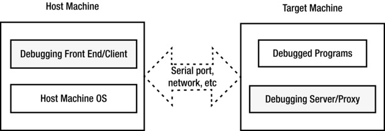
Figure 3-6.
Software environment for cross-debugging
For example, if you set a breakpoint at the front end to observe the values of a variable, the debugging server receives the breakpoint setup request and inserts an interruption at corresponding place in the program. When the application reaches the breakpoint, the debugging server takes over control, suspends the application, and sends back the values of the corresponding variable to the front end, which then displays the value.
Many development tools support cross-debugging, such as, for example, GNU debugger. Android Debug Bridge (adb), a common debugging tool, also supports cross-debugging. The adb debugger is based on the client/server model. It works on the principle that the local working platform serves as the debugging client while the machine on which remote applications are installed serves the role of the debugging server. When using adb, the debugging process of the remote applications (on the target machine) may be different from local debugging. Adb manages the device, emulates status, and carries out the following operations:
- Fast code updating in the device and emulators, such as applications or Android system updates
- Running shell commands on the device
- Managing predetermined ports of the devices or emulators
- Copying or pasting files on the devices or emulators
Some common operations of adb include the following:
adb shell
This command allows you to enter the Linux shell environment of the device or emulator where you can execute many Linux commands. If you want to execute just one shell command, you can enter:
adb shell[command]
For [command], enter the particular command you want to execute, for example: adb shell dmesg, which outputs the debugging information of the kernel. Note: the Linux shell for Android adb has been simplified, so it is not compatible with many of the common Linux commands. We’re going to discuss the command line in the subsequent sections.
Adb can be run independently in command line form or integrated as a plug-in into your favorite IDE (integrated development environment) such as Eclipse†. Figure 3-7 shows a screenshot of debugging an Android application in Eclipse. Adb provides many common debugging tools such as breakpoint setup, observing variables, single-step execution, and checking debugging output. The debugging process is the same as the debugging process for local applications. Many developers cannot even tell that the application is running on the target machine and not the host machine.
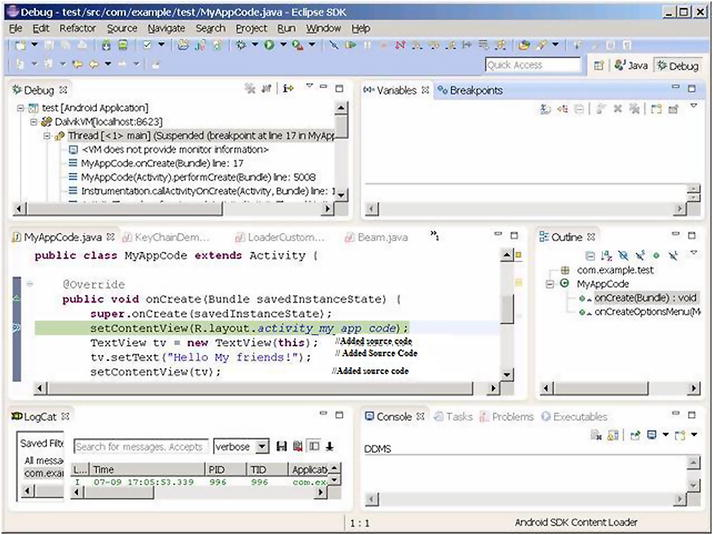
Figure 3-7.
Android application debugging in Eclipse
In the next sections we’re going to show examples of using adb commands and Eclipse debugging.
Typical Development Tool Chains
All stages of Android software development have corresponding tools to help developer complete tasks. Groups of development tools are called tool chains, or toolsets. The typical tool chains are listed in Table 3-3.
Table 3-3.
Typical Tool Chains for Android Software Development
Development Stage | Function Description | Typical Examples |
|---|---|---|
Editing | Writing and editing source code | vi, Emacs, Windows Notepad |
Compiling and linking | Compiling and linking source programs into executable binary files | gcc, icc (Intel Compiler) |
Flashing | Burning executable binary programs into the Android system’s ROM or flash to ensure the system automatically starts up | J-fFlash, Sjflash |
Debugging | Dynamic follow-up on the running status of the programs; checking on execution of programs and identifying causes behind program errors | Gdb, adb, Kernel Debugger |
Optimizing | Analyzing program performance and helping developers create faster and more efficient programs with little occupied space | gprof, Intel Vtune™ Amplifier |
Testing | Helping testing personnel to identify mistakes in the programs and reduce HR costs | CETK |
Verifying | Verifying logical correctness and common errors of programs, especially under harsh testing and debugging environments | Application Verifier |
Simulating/Emulating | Simulating and emulating the running environment of Android hardware to help developers develop and debug | Qemu, VirtualBox and VMware Player |
Many toolsets are available, provided by different companies and organizations, each with its own characteristics. Icc, the Vtune Amplifier, and idb are provided by Intel, while gcc, gdb, and gproof by the free software organization GNU; and CETK, Application Verifier, Device Emulator are provided by Microsoft. Some of these tools are free like the GNU toolsets. Others, such as the Microsoft toolsets, must be purchased. These tools run on different platforms. For example, Jflash runs on the Linux platform while most of the Microsoft tools are based on Windows (including desktop Windows OS and Android OS-Windows CE/Mobile). And some are even cross-platform tools; for example, GNU toolsets can run on multiple platforms such as Linux, Windows, and Mac operating systems.
The way in which these toolsets are used falls into two categories: one is command line and the other is integrated development environment (IDE). Command line toolsets are executed by single commands entered in their command lines. In the case of IDEs, all functions are integrated into one tool, including editing, compiling, linking, deploying, and debugging, so that the full development process can be performed in one application. Most of the GNU tools run on command lines. Probably the most widely used IDE is Microsoft Visual Studio†. Anjuta DevStudio is a Linux-based IDE. The Android development tool, Eclipse, is an IDE that can run on multiple operating systems including Windows and Linux. In this book, we’re going to use the Windows version.
GNU toolsetscan run on multiple platforms; their openness, large usage scope, and compatibility with other tools have made them a common choice for Android application development.
Tip
GNU, GPL, and LGPL GNU is by far the largest, most famous, and influential free software organization. It was created by Richard Stallman in 1985 who founded the Free Software Foundation (FSF) to break away from commercial software. You must comply with GNU software license before using GNU software.
GPL, short for GNU General Public License, is one of the GNU software licenses. GPL allows the public to enjoy the freedom of running, copying, and sharing software, obtaining source code, and improving the software and sharing it with the public. GPL also stipulates that as long as one part or the entirety of the altered content comes from the programs complied by GPL, then the sharing of the altered software must comply with GPL requirements, which means that you need to publish the changed source code and refrain from adding restrictions on the sharing of the improved software. GPL was the catalyst for developing and publishing the Linux OS and related software.
LGPL, which means Lesser GPL, is also one of the GNU software licenses. It is a variant of GPL. What’s different is that users enjoy private usage on LGPL-authorized free software. And the new software developed can be proprietary instead of free. Before using the free software, users must obtain LGPL or other variants of GPL. LGPL was initially used for some GNU program libraries (software libraries). So it was called Library GPL. Mozilla and OpenOffice.org are examples of software developed under LGPL.
GNU development tools are free. Anyone who agrees to GPL license can download them. GNU has also provided complete tool chains for software development on Android systems and Intel architecture systems. Such tools include compiler, assembly, linker, and debugging tools. They can be run independently from command lines or integrated into an IDE such as Eclipse. The GNU tool chains are listed in Table 3-4.
Table 3-4.
GNU Tool Chains
Function | Component | Description |
|---|---|---|
Editing | vi, Emacs, ed | Text editor used for editing source code |
Compiling & linking | gcc | A set of multi-programming language compilers |
Debugging | gdb | Debugger |
Optimizing | gproof | Optimization tool for analyzing program performance and helping developers to create faster-running programs |
Project Management | make | Auto management tool for software compilation |
System Building | autotools | All materials and files required for build projects |
The components are further explained below.
Editor
Any text editing tool can be used to write and edit source code. The Linux platform has two categories of editors: one includes line editors such as ed and ex; the other includes full-screen editors such as vi, Emacs, and gedit. Line editors can only operate on one line, while full-screen editors can edit an entire screen of code and the edited files are displayed, thus overcoming the shortcomings of line editing and making it easier to use. Full-screen editors have a larger feature set than line editors.
In an IDE, editors are integrated into the tool and need not be used separately to write source code.
Compiler and Linker
The editing process involves grammar, semantic, and lexical analyses, generation and optimization of intermediate codes, symbol table management and error management. The GNU editor is gcc. Gcc is considered the standard compiler of Linux.
Gcc was initially the C language editor of GNU. Now it supports C, C++, Object-C, FORTRAN, Java, and ADA. To some degree, gcc is the combination of all GNU editors. Gcc compiles source code and does the linking process. Users can choose the command parameters to compile, link, and generate executable files.
Intel Compiler also optimized code paths to improve application performance on Intel platforms. Intel Compiler is bundled with the tools offering from Intel called Intel Integrated Native Developer Experience.
Debugger
A debugger makes it easier for programmers to debug programs. But it is not necessarily a tool required for code execution. During the compilation process, the time spent on debugging is more than the time on encoding. Therefore a full-featured debugger that’s easy to use is necessary.
The GNU debugger is gdb (abbreviation of GNU Debugger). It is also open source code and is a command line–based debugger. All debugging commands are realized through the commands of the control station.
Build Manager
GNU provides one build manager called make, a tool for controlling compilation of multiple software files. It is similar to Visual C++† project in Windows. In addition, it can automatically manage the contents, means, and timing of software compilation to help programmers so they can focus on coding instead of organizing compiling sequences.
Make can call gcc to compile and link source codes into executable files for the target machine according to the makefile defined by the developer.
Makefile Auto Generation Tool
Makefile can help make to perform the target file generation task. But encoding a makefile is not an easy job, especially for big projects. GNU provides a series of autotools to make makefiles. Such tools are aware of system configuration issues to help developers deal with migration issues. Autotools include aclocal, autoscan, autoconf, autoheader, automake, and libtool.
Several methods are used for generating target files from source code as shown in Figure 3-8.
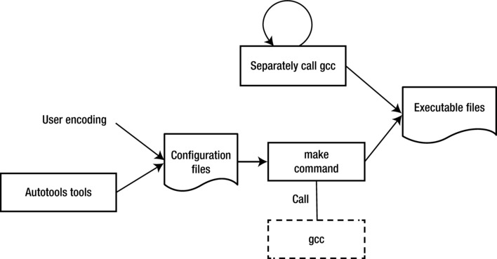
Figure 3-8.
Methods for generating target files using GNU tool chain
- Method 1: Use gcc (or Intel compiler ICC) to compile and link all source code files to generate executable target files
- Method 2: Use an IDE, such as Eclipse, to compile a makefile and other configuration files and then use make to generate executable target files
- Method 3: Use system build tools-autotools to make makefile and other configurations, and then use make to generate executable target files
Optimizing Tools -- gprof
To help developers optimize their programs, GNU provides a performance analyzer, gproof, one of the GNU binutils tools.
Gproof can measure the performance of programs and record the called times of each function and corresponding execution time so that the optimization effort can be centered on the most time-consuming portions. In addition, gproof can also generate function call relations during programming execution, including number of called times, to help programmers analyze how programs are executing. By relying on the function call relations, developers do not need to go through all the details of a program’s execution, improving their work efficiency. And this function is also helpful for maintaining old code or analyzing open source projects. With the calling diagram, you can get a basic understanding of the running framework and “skeleton” of the programs. Then analyzing them is less difficult, especially for code and open source projects you may not be familiar with.
Overview, Installation, and Configuration of Android Application Development Tool Chains on Intel® Architecture
Android provides a complete set of tool chains (or toolsets) for application development. Originally, Android ran only on ARM architecture hardware platforms. But now, to support Android tool chains on the Intel Atom hardware platform, Intel has added important plug-ins, libraries, and other auxiliary components. In addition, to give better play to the performance advantages of Intel hardware, Intel has added special development tools such as compilers and optimizers.
This chapter introduces the general processes and methods for Android application development on the Intel Atom platform. In the subsequent sections, we’re going to discuss the methods for using special Intel tools to achieve optimized performance and low energy consumption.
The Android and GNU development tool chains and the functions corresponding to Android cross development stages are shown in Table 3-5.
Table 3-5.
Comparison between GNU and Android Tool Chains
Stages of Cross Development | GNU Tool Chains | Android Development Tool Chains for Intel® Architecture | Remarks |
|---|---|---|---|
Editing | vi, Emacs, ed | Eclipse, Android SDK | Android development tools and Intel related plug-ins |
Compiling and linking | Gcc | ||
Project management | Make | ||
Auto generation tool-makefile | Autotools | ||
Deployment | \ | ||
Debugging | gdb | ||
Simulation/emulation | \ | Android Virtual Device (AVD) | |
Optimization | gprof | Vtune™ analyzer | Intel series of tools |
In addition to the differences with GNU tools shown above, Intel also provides some special performance libraries, including Intel® Integrated Performance Primitives (Intel® IPP), Intel® Math Kernel (Intel® MKL), and Intel® Threading Building Blocks (Intel® TBB). Some of the libraries have already provided special services such as the C++ template based threading services API in Intel TBB. Some of them use the Intel architecture instruction potential to achieve optimized performance, such as, for example, the Fast Fourier Transform (FFT) in Intel IPP. Some of the libraries still do not have direct Java interfaces. We’re going to discuss them in subsequent sections.
Table 3-5 shows that the Android development tool chain for Intel architecture basically includes two parts: one part is the Android development tools. The Intel tools here include an Intel architecture emulator, development library, and other plug-ins. The other part is the independent Intel tools. While the Android development tools support most of the steps of application development such as editing, building, packaging, deployment, and debugging, the Intel tools involve mainly optimization.
Android development tools mean the software environment consisting of JDK (Java SE Development Kit), Android SDK (Software Development Kit), and an IDE (Integrated Development Environment)—Eclipse. Android development tools can run on Linux, OS X, and Windows systems. In this book, we’re going to discuss the Windows scenario.
The Android development tools can be run in command-line format or an IDE. The general development process of the Android command line tool in the Android SDK is shown in Figure 3-9. Eclipse, a graphic user interface tool, is typically the tool used for IDE mode, integrating the functions of editing, compiling, linking, deployment, and debugging. We’re going to discuss the method based on the IDE.
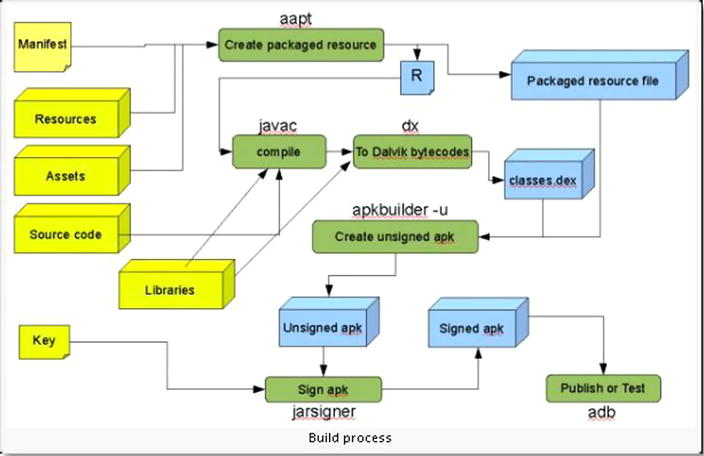
Figure 3-9.
Development process of the Android SDK command line
The directory structure of the Android SDK is shown below. It can be obtained by running the tree command from the command line.
├─add-ons
│ └─addon-google_apis-google-16
├─docs
│ ├─about
│ ├─assets
│ ├─design
│ ├─develop
│ ├─distribute
│ ├─guide
│ ├─images
│ ├─intl
│ ├─live
│ ├─out
│ ├─reference
│ ├─resources
│ ├─samples
│ ├─sdk
│ ├─shareables
│ ├─tools
│ └─training
├─extras
│ ├─android
│ └─google
├─platform-tools
│ ├─api
│ ├─lib
│ └─renderscript
├─platforms
│ └─android-16
├─samples
│ └─android-16
├─sources
│ └─android-16
├─system-images
│ └─android-16
├─temp
└─tools
├─ant
├─apps
├─Jet
├─lib
├─proguard
├─support
├─systrace
└─templates
The main files you should notice are:
- add-ons: API packages provided by Google, like Google Maps APIs
- docs: help and explanation documents
- platforms: API packages nd some example files for each SDK version
- tools: some general tool files
- usb_driver: AMD64 and Intel architecture driver files
The main files and their functions are described below.
android.jar
This file is located under the directory of %android-sdk%\platforms, and each version of Android has one android.jar. By looking at the .jar file you can understand the structure and organization of internal API packages. The string %android-sdk% here is the install directory of Android SDK while the corresponding directory for version 16 is android-16. For example, the author’s android.jar is located in:
C:\Documents and Settings>dir D:\Android\
......
2012-07-08 20:02 18,325,478 android.jar
The android.jar is a standard zip package that contains compiled zipped files and all APIs. You can use WinRAR, or other archiving tool, to view its internal structure as shown in Figure 3-10. Its API kit is further divided into app, content, database, and so on.
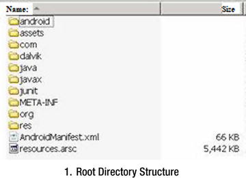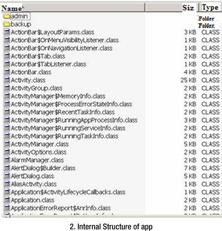
Figure 3-10.
Content structure of android.jar
ddms.bat
The debugging monitor service ddms.bat, shown in Figure 3-11, is integrated in Dalvik (the virtual device of the Android platform) and used for managing the processes of emulators or devices and assisting debugging work. It can eliminate some processes and choose one certain program for debugging, generate follow-up data, check threading data, or take snapshots of emulators or devices.
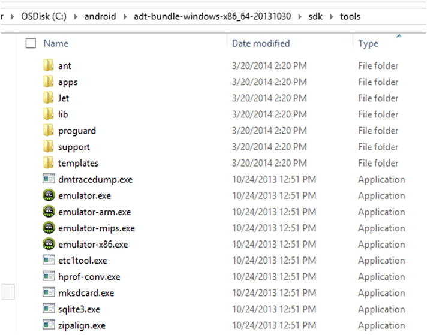
Figure 3-11.
The debugging monitor service ddms.bat
adb.exe
Android Debug Bridge (adb) is a multipurpose tool that can help you manage the state of devices or emulators. As mentioned before, this file is located under %android-sdk%\platform-tools. For example, the author’s adb.exe is located in the C:\android\adt-bundle-windows-x86_64-20131030\sdk\platform-tools directory, as shown in Figure 3-12.
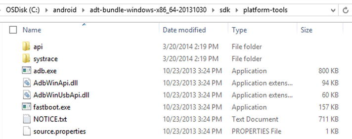
Figure 3-12.
File location of the adb.exe tool
aapt.exe
With the Android resource packaging tool (aapt.exe), you can create .apk files that contain binary files and resource files for Android applications. The file location is the same as adb.exe.
aidl.exe
The Android interface description language (aidl.exe) is used for generating inter-process interface codes. The file location is the same as adb.exe.
sqlite3.exe
Android can create and use SQLite3 database files. Developers and users can easily access such SQLite data files. The file location is the same as ddms.bat.
dx.bat
Rewrite class byte code as Android byte code (saved in a dex file). The file location is the same with that of adb.exe.
android.bat
The android.bat file is under the same directory as ddms.bat. This command is used for displaying and creating the AVD.
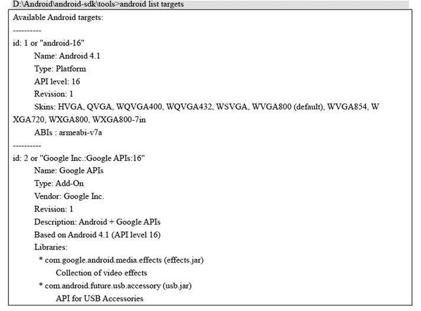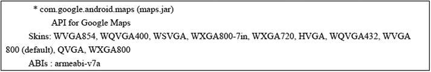
Figure 3-13.
The command shows that two target machine development libraries are installed on the machine
Intel Environment Setup for Android (OS X Host)
The Environment Setup for Android (OS X Host) Integrates common Intel and third-party tools into your preferred IDE for productivity-oriented designing, coding, and debugging. Supported IDEs include Eclipse and Android Studio. This beta release, formerly known as Beacon Mountain beta, will be part of the Intel® Integrated Native Developer Experience (Intel® INDE) for OS X hosts and can be downloaded at
https://software.intel.com/en-us/inde/environment-setup-osx
. Table 3-6 provides a list of what is included in the Environment Setup for Android (OS-X Host).
Table 3-6.
Environment Setup for Android (OS-X Host)
Product Installs | • Android Studio beta • Intel® Integrated Native Developer Experience(Intel® INDE) native project template for Android Studio • Android SDK • Android NDK • Intel® Hardware Accelerated Execution Manager(Intel® HAXM) • Apache Ant • Intel® INDE plugins for Eclipse |
IDEs | • Eclipse • Android Studio beta |
Host Support | • OS X |
Target Support | • Android* 4.3 and up (based on ARM and Intel® architecture) |
Android Development on Linux-based Host Machines
The following Android development tools for Linux-based host machines are available for download at:
- Intel® Graphics Performance Analyzers ( https://software.intel.com/en-us/vcsource/tools/intel-gpa )
- Intel® Hardware Accelerated Execution Manager (Intel® HAXM)( https://software.intel.com/en-us/android/articles/intel-hardware-accelerated-execution-manager/ )
- Intel® Threading Building Blocks (Intel® TBB)( https://software.intel.com/en-us/intel-tbb )
- Intel® C++ Compiler for Android ( https://software.intel.com/en-us/c-compiler-android/ )
- Intel® Integrated Performance Primitives (Intel® IPP)( https://software.intel.com/en-us/intel-ipp )
Intel® Integrated Native Developer Experience beta
The Intel Integrated Native Developer Experience (Intel INDE) is a beta release of Intel’s cross-platform development suite designed to quickly and easily create applications targeting Android and Windows devices with native performance, outstanding battery-life, and exposure to unique platform capabilities. INDE provides a complete and consistent set of C++/Java tools, libraries, and samples for environment setup, code creation, compilation, debugging, and analysis on Intel architecture-based devices and select capabilities on ARM-based Android devices.
As a native cross-platform development suite, Intel INDE includes C++/Java native tools and samples for Android and Microsoft Windows, integration of tools into popular IDEs, and automatic updates to the latest tools and technology.
Tools and Libraries
Media: easily add visually compelling native video and audio extensions that work across the latest popular Android phones and tablets. The Intel INDE Media Pack for Android provides source code and samples to enhance apps with:
- Camera and screen capture
- Video editing
- Video streaming
- Audio fingerprinting
- Support for Intel architecture and ARM-based Android devices running 4.3 and up.
Threading: efficiently implement higher-level, task-based parallelism using the Intel Threading Building Blocks (Intel TBB). Intel TBB is an award-winning C++ template library for the development of higher-performance, scalable applications. Apps created using the parallelism tool can run on Intel architecture and ARM processor-based Android 4.3 and up devices, as well as Microsoft Windows 7–8.1 client.
Compiling: bring a heritage of industry-leading performance to your Android apps with performance-oriented compiling with the Intel® C++ Compiler for Android. The compiler is source-code compatible with GCC, enabling easy usage. The GNU C++ Compiler is also provided through the Android NDK, which is a customization option in the Environment Setup component of Intel INDE. Apps created using the Intel C++ Compiler can run on Intel architecture-based devices running Android 4.3 and up.
Compute Code Builder: maximize performance with programmable graphics - develop code that executes on computing devices beyond the CPU using the Compute Code Builder. This tool assists with creating, compiling, debugging and analyzing compute APIs like Google Renderscript† and OpenCL†. The compute code builder can be used in standalone mode or integrated with Microsoft Visual Studio or Eclipse. Apps created can run on Intel architecture-based Android 4.4 devices, as well as Microsoft Windows 7–8.1 client. Visit Intel’s Getting Started Guide for more information.
- Analyzing and Debugging: Use Analysis and optimization tools suite includes the Intel Graphics Performance Analyzer (Intel GPA) System Analyzer, Intel GPA Platform Analyzer, Intel GPA Frame Analyzer, and Intel Frame Debugger. You can use them to do the following:
- Real-time trace analysis of code execution, CPU/GPU usage and task data, and more
- Frame-capture analysis and debugging
- Platform-wide and application-specific GPU metric analysis and graphics pipeline overrides
Apps created using the analysis and debugging tools can run on Intel architecture-based devices running Microsoft Windows 7–8.1 or Android 4.4.
Setup
Setting up an environment for Intel INDE is easy. You can build your custom environment in minutes instead of hours:
- Selectively choose tools to install, allowing for a customized environment.
- Choose from the Google Android SDK (including Eclipse), vs-Android plug-in for Microsoft Visual Studio, Android NDK, Android Design, Apache Ant, and Intel HAXM.
Apps created using the environment setup can run on Intel architecture and ARM-based targets running Android 4.3 and up.
Intel INDE Installation
The following sections describe the Intel INDE installation process.
Downloading Intel INDE
Go to
https://software.intel.com/en-us/intel-inde
, click the Download link, and accept the license agreements. You will receive an e-mail with a download link, as shown in Figure 3-14.
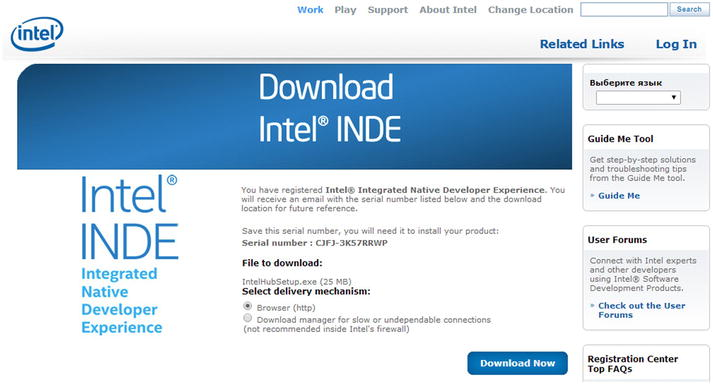
Figure 3-14.
Download screen for INDE
Installing Intel INDE
Run the downloaded file: IntelHubSetup.exe. An Intel INDE window displays license terms and conditions, as shown in Figure 3-15.
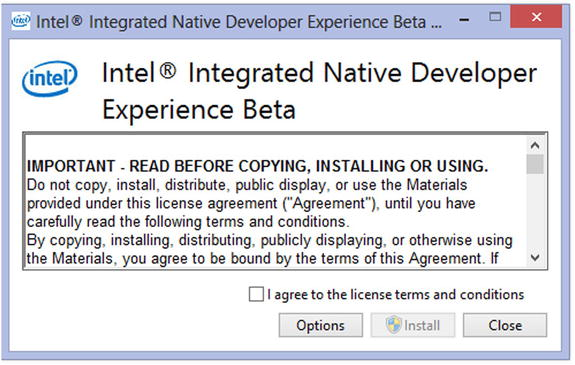
Figure 3-15.
INDE install window
Check the box to agree to the license terms and conditions, and click Install. The setup process starts, and several command-line windows flash. An Intel INDE icon and an NDK.cmd icon are created on your desktop. When the process is complete, you are ready to launch, as shown in Figure 3-16.
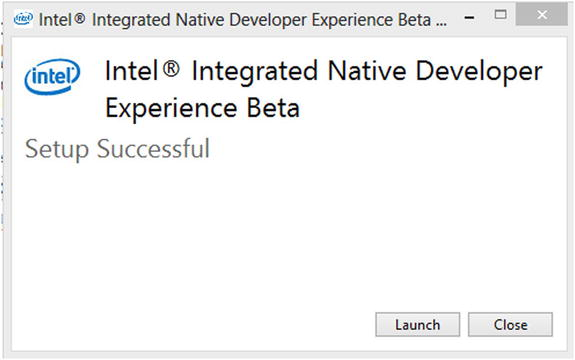
Figure 3-16.
INDE setup complete
Launching Intel INDE
Click the Launch icon, and the main Intel INDE window will start as shown in Figure 3-17.
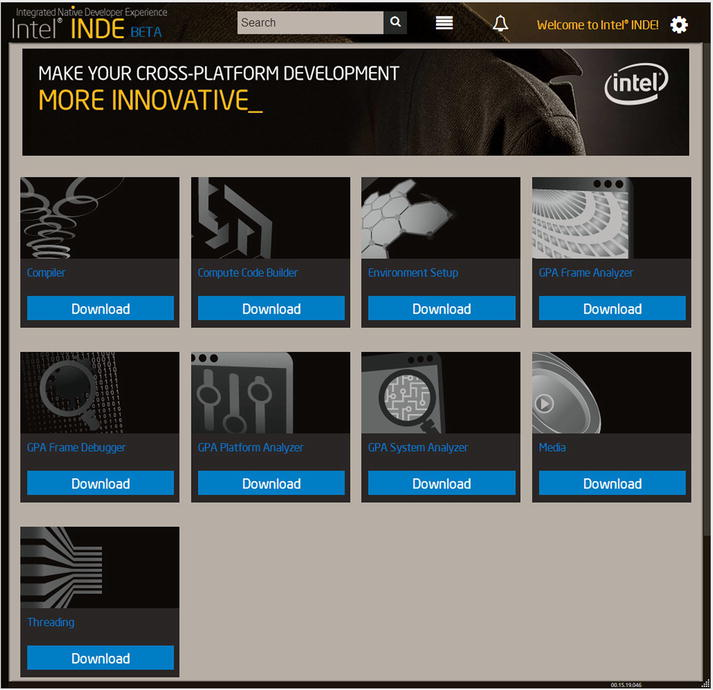
Figure 3-17.
Main window for INDE
Follow each tool and application to download the necessary software. You’re ready to begin cross-platform development.
Configure Eclipse
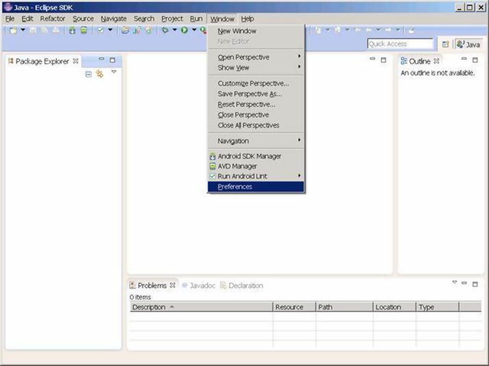
Figure 3-18.
Startup page for configuring Eclipse
2.
A Preferences dialog box will pop up. Select the Android branch and then type the correct path in the SDK Location box (usually this is auto-populated), as shown in Figure 3-19. Note: After clicking the Android branch, a dialog box will pop up. Click Proceed to continue.
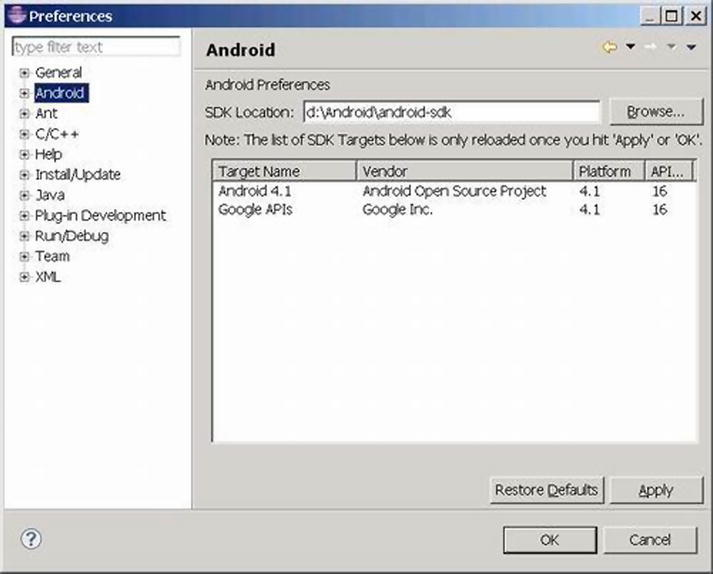
Figure 3-19.
Directory Location Setting of Android SDK
Create AVD (Emulator)
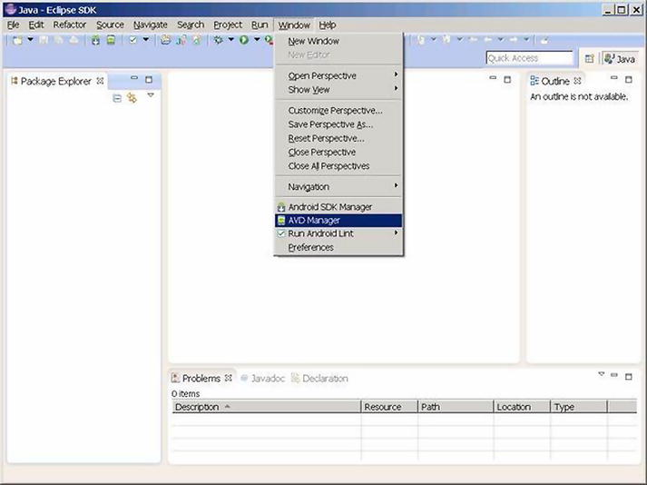
Figure 3-20.
Start menu for creating emulator
2.
The Android Virtual Device Manager dialog box will pop up, as shown in Figure 3-21. Click the New button.
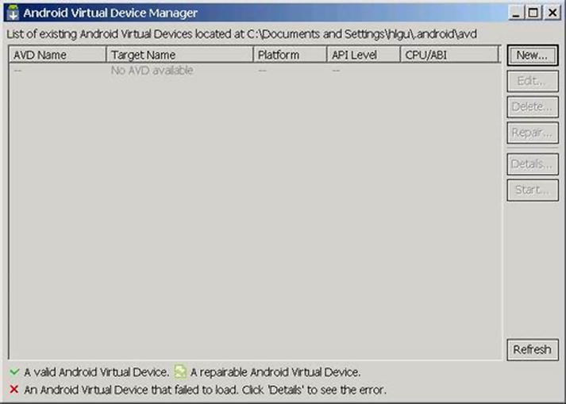
Figure 3-21.
Initial page of emulator list
3.
When the Create new Android Virtual Device (AVD) dialog box displays, as shown in Figure 3-22, type an appropriate name and, for Target, select the version of Android you wish to use. The CPU/ABI box will automatically display Intel Atom(x86). The size field for the SD card is the amount of space allocated for it on the hard disk (in this example, 1024 MB). If your target device has a larger SD card, enter the correct size. When the settings are correct, click Create AVD to close the dialog box.
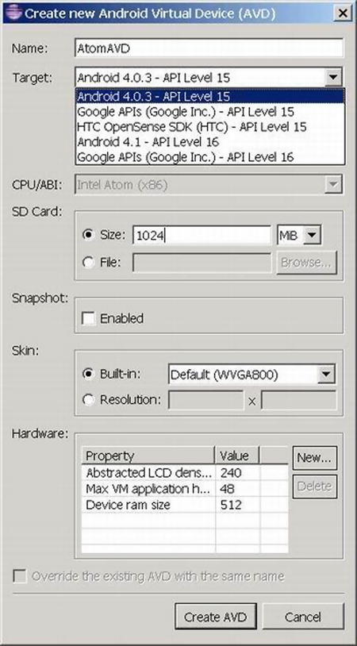
Figure 3-22.
Creation parameter setting for emulator
4.
The Android Virtual Device Manager will then display, as shown in Figure 3-23, and you can see the newly added item in the list. Click the close button (the x) to close the dialog box.
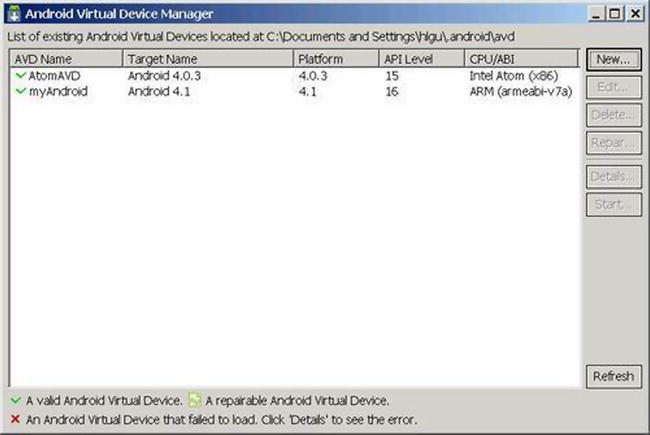
Figure 3-23.
Display of created list of emulator
Summary
So far, you have finished installing the development environment tools for an emulator target machine. The next chapter discusses how, if your target machine is a real device (for example, a smartphone or tablet), you need to install and configure the development environment for developing and testing apps on that device.